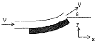
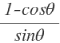
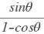
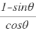
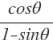
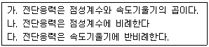
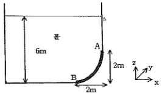
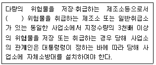
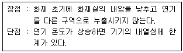
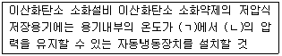

소방설비기사(기계분야) (2016-03-06 기출문제)
1과목: 소방원론
1. 증기비중의 정의로 옳은 것은? (단, 보기에서 분자, 분모의 단위는 모두 g/mol 이다.)
- 분자량/22.4
- 분자량/29
- 분자량/44.8
- 분자량/100
(정답률: 75%)

2. 위험물안전관리법령상 제4류 위험물의 화재에 적응성이 있는 것은?
- 옥내소화전설비
- 옥외소화전설비
- 봉상수소화기
- 물분무소화설비
(정답률: 70%)
3. 화재 최성기 때의 농도로 유도등이 보이지 않을 정도의 연기농도는? (단, 감광계수로 나타낸다.)
- 0.1m-1
- 1m-1
- 10m-1
- 30m-1
(정답률: 63%)
4. 가연성 가스가 아닌 것은?
- 일산화탄소
- 프로판
- 수소
- 아르곤
(정답률: 75%)
5. 위험물안전관리법령상 위험물 유별에 따른 성질이 잘못 연결된 것은?
- 제1류 위험물 - 산화성고체
- 제2류 위험물 - 가연성고체
- 제4류 위험물 - 인화성액체
- 제6류 위험물 - 자기반응성물질
(정답률: 78%)
6. 무창층 여부를 판단하는 개구부로서 갖추어야할 조건으로 옳은 것은?
- 개구부 크기가 지름 30cm 의 원이 내접할 수 있는 것
- 해당 층의 바닥면으로부터 개구부 밑 부분 까지의 높이가 1.5m 인 것
- 내부 또는 외부에서 쉽게 파괴 또는 개방할 수 있을 것
- 창에 방법을 위하여 40cm 간격으로 창살을 설치할 것
(정답률: 70%)
7. 황린의 보관 방법으로 옳은 것은?
- 물 속에 보관
- 이황화탄소 속에 보관
- 수산화칼륨 속에 보관
- 통풍이 잘 되는 공기 중에 보관
(정답률: 76%)
8. 가연성가스나 산소의 농도를 낮추어 소화하는 방법은?
- 질식소화
- 냉각소화
- 제거소화
- 억제소화
(정답률: 71%)
9. 분말 소화약제 중 A급, B급, C급 화재에 모두 사용할 수 있는 것은?
- Na2CO3
- NH4H2PO4
- KHCO3
- NaHCO3
(정답률: 77%)
10. 화재발생 시 건축물의 화재를 확대시키는 주요인이 아닌 것은?
- 비화
- 복사열
- 화염의 접촉(접염)
- 흡착열에 의한 발화
(정답률: 60%)
11. 제2종 분말 소화약제가 열분해되었을 때 생성되는 물질이 아닌 것은?
- CO2
- H2O
- H3PO4
- K2CO3
(정답률: 70%)
12. 제거소화의 예가 아닌 것은?
- 유류화재 시 다량의 포를 방사한다.
- 전기화재 시 신속하게 전원을 차단한다.
- 가연성가스 화재 시 가스의 밸브를 닫는다.
- 산림화재 시 확산을 막기 위하여 산림의 일부를 벌목한다.
(정답률: 76%)
13. 공기 중에서 수소의 연소범위로 옳은 것은?
- 0.4 ~ 4 vol%
- 1 ~ 12.5 vol%
- 4 ~ 75 vol%
- 67 ~ 92 vol%
(정답률: 76%)
14. 일반적인 자연발화의 방지법으로 틀린 것은?
- 습도를 높일 것
- 저장실의 온도를 낮출 것
- 정촉매 작용을 하는 물질을 피할 것
- 통풍을 원활하게 하여 열축적을 방지할 것
(정답률: 75%)
15. 이산화탄소(CO2)에 대한 설명으로 틀린 것은?
- 임계온도는 97.5℃ 이다.
- 고체의 형태로 존재할 수 있다.
- 불연성가스로 공기보다 무겁다.
- 상온, 상압에서 기체 상태로 존재한다.
(정답률: 71%)
16. 건물화재 시 패닉(panic)의 발생원인과 직접적인 관계가 없는 것은?
- 연기에 의한 시계 제한
- 유독가스에 의한 호흡 장애
- 외부와 단절되어 고립
- 불연내장재의 사용
(정답률: 76%)
17. 화학적 소화방법에 해당하는 것은?
- 모닥불에 물을 뿌려 소화한다.
- 모닥불을 모래로 덮어 소화한다.
- 유류화재를 할론 1301로 소화한다.
- 지하실 화재를 이산화탄소로 소화한다.
(정답률: 73%)
18. 목조건축물에서 발생하는 옥외출화 시기를 나타낸 것으로 옳은 것은?
- 창, 출입구 등에 발염 착화한 때
- 전장 속, 벽 속 등에서 발염 착화한 때
- 가옥 구조에서는 천장면에 발염 착화한 때
- 불연 천장인 경우 실내의 그 뒷면에 발염 착화한 때
(정답률: 71%)
19. 공기 중의 산소의 농도는 약 몇 vol% 인가?
- 10
- 13
- 17
- 21
(정답률: 78%)
20. 화재 발생 시 주수소화가 적합하지 않은 물질은?
- 적린
- 마그네슘 분말
- 과염소산칼륨
- 유황
(정답률: 72%)
2과목: 소방유체역학
21. 펌프의 입구 및 출구측에 연결된 진공계와 압력계가 각각 25mmHg 와 260kPa 을 가리켰다. 이 펌프의 배출 유량이 0.15m3/s 가 되려면 펌프의 동력은 약 몇 kW가 되어야 하는가? (단, 펌프의 입구와 출구의 높이 차는 없고, 입구측 관직경은 20cm, 출구쪽 관직경은 15cm 이다.)
- 3.95
- 4.32
- 39.5
- 43.2
(정답률: 35%)
22. 펌프에 대한 설명 중 틀린 것은?
- 회전식 펌프는 대용량에 적당하며 고장 수리가 간단하다.
- 기어 펌프는 회전식 펌프의 일종이다.
- 플런저 펌프는 왕복식 펌프이다.
- 터빈 펌프는 고양정, 대용량에 적합하다.
(정답률: 58%)
23. 어떤 밸브가 장치된 지름 20cm 인 원관에 4℃의 물이 2m/s 의 평균속도로 흐르고 있다. 밸브와 앞과 뒤에서의 압력차이가 7.6kPa 일 때, 이 밸브의 부차적 손실계수 K와 등가길이 Le 은? (단, 관의 마찰계수는 0.02이다.)
- K = 3.8 Le = 38m
- K = 7.6 Le = 38m
- K = 38 Le = 3.8m
- K = 38 Le = 7.6m
(정답률: 49%)
24. 안지름 30cm인 원관 속을 절대압력 0.32MPa, 온도 27℃인 공기가 4kg/s로 흐를 때 이 원관속을 흐르는 공기의 평균 속도는 약 몇 m/s인가? (단, 공기의 기체상수 RL = 287 J/kg·K 이다.)
- 15.2
- 20.3
- 25.2
- 32.5
(정답률: 40%)
25. 국소대기압이 102kPa 인 곳의 기압을 비중 1.59, 증기압 13kPa 인 액체를 이용한 기압계로 측정하면 기압계에서 액주의 높이는?
- 5.71m
- 6.55m
- 9.08m
- 10.4m
(정답률: 33%)
26. 이상기체 1kg를 35℃로부터 65℃까지 정적과정에서 가열하는데 필요한 열량이 118kJ이라면 정압비열은? (단, 이 기체의 분자량은 4이고 일반기체상수는 8.314kJ/kmol·K이다.)
- 2.11 kJ/kg·K
- 3.93 kJ/kg·K
- 5.23 kJ/kg·K
- 6.01 kJ/kg·K
(정답률: 26%)
27. 경사진 관로의 유체흐름에서 수력기울기선의 위치로 옳은 것은?
- 언제나 에너지선보다 위에 있다.
- 에너지선보다 속도수두 만큼 아래에 있다.
- 항상 수평이 된다.
- 개수로의 수면보다 속도수두 만큼 위에 있다.
(정답률: 63%)
28. A, B 두 원관 속을 기체가 미소한 압력차로 흐르고 있을 때 이 압력차를 측정하려면 다음 중 어떤 압력계를 쓰는 것이 가장 적절한가?
- 간섭계
- 오리피스
- 마이크로마노미터
- 부르동 압력계
(정답률: 58%)
29. 그림과 같이 속도 V인 유체가 정지하고 있는 곡면 깃에 부딪혀 그림의 각도로 유동 방향이 바뀐다 유체가 곡면에 가하는 힘의 x, y 성분의 크기를 |Fx| 와 |Fy| 라 할 때 |Fy| / |Fx| 는? (단, 유동 단면적은 일정하고, 0° < θ < 90°이다.)





(정답률: 52%)
30. 안지름 50mm 인 관에 동점성계수 2 X 10-3 cm2/s 인 유체가 흐르고 있다. 층류로 흐를 수 있는 최대 량은 약 얼마인가? (단, 임계레이놀즈수는 2100으로 한다.)
- 16.5 cm3/s
- 33 cm3/s
- 49.5 cm3/s
- 66 cm3/s
(정답률: 45%)
31. Newton 의 점성법칙에 대한 옳은 설명으로 모두 짝지은 것은?

- 가, 나
- 나, 다
- 가, 다
- 가, 나, 다
(정답률: 61%)
32. 전체 질량이 3000kg 인 소방차의 속력을 4초만에 시속 40km에서 80km로 가속하는 데 필요한 동력은 약 몇 kW 인가?
- 34
- 70
- 139
- 209
(정답률: 38%)
33. 관의 단면적이 0.6m2 에서 0.2m2로 감소하는 수평 원형 축소관으로 공기를 수송하고 있다. 관 마찰손실은 없는 것으로 가정하고 7.26N/s의 공기가 흐를 때 압력 감소는 몇 Pa 인가? (단, 공기 밀도는 1.23kg/m3이다.)
- 4.96
- 5.58
- 6.20
- 9.92
(정답률: 31%)
34. 물의 압력파에 의한 수격작용을 방지하기 위한 방법으로 옳지 않은 것은?
- 펌프의 속도가 급격히 변화하는 것을 방지한다.
- 관로 내의 관경을 축소시킨다.
- 관로 내 유체의 유속을 낮게 한다.
- 밸브 개폐시간을 가급적 길게 한다.
(정답률: 65%)
35. 그림과 같이 반경 2m, 폭(y방향) 4m의 곡면 AB가 수문으로 이용된다. 이 수문에 작용하는 물에 의한 힘의 수평성분(x방향)의 크기는 약 얼마인가?

- 337kN
- 392kN
- 437kN
- 492kN
(정답률: 50%)
36. 수두 100 mmAq로 표시되는 압력은 몇 Pa인가?
- 0.098
- 0.98
- 9.8
- 980
(정답률: 52%)
37. 기체의 체적탄성계수에 관한 설명으로 옳지 않은 것은?
- 체적탄성계수는 압력의 차원을 가진다.
- 체적탄성계수가 큰 기체는 압축하기가 쉽다.
- 체적탄성계수의 역수를 압축률이라 한다.
- 이상기체를 등온압축 시킬 때 체적탄성계수는 절대압력과 같은 값이다.
(정답률: 55%)
38. φ 150mm 관을 통해 소방용수가 흐르고 있다. 평균유속이 5m/s이고 50m 떨어진 두 지점 사이의 수두손실이 10m 라고 하면 이 관의 마찰계수는?
- 0.0235
- 0.0315
- 0.0351
- 0.0472
(정답률: 51%)
39. 직경 2m 인 구 형태의 화염이 1MW의 발열량을 내고 있다. 모두 복사로 방출될 때 화염의 표면 온도는? (단, 화염은 흑체로 가정하고, 주변온도는 300K 스테판-볼츠만 상수는 5.67X10-8 W/m2K4)
- 1090K
- 2619K
- 3720K
- 6240K
(정답률: 30%)
40. 안지름이 15cm 인 소화용 호스에 물이 질량유량 100kg/s로 흐르는 경우 평균유속은 약 몇 m/s 인가?
- 1
- 1.41
- 3.18
- 5.66
(정답률: 51%)
3과목: 소방관계법규
41. 소방용수시설 저수조의 설치기준으로 틀린 것은?
- 지면으로부터의 낙차가 4.5m 이하일 것
- 흡수부분의 수심이 0.3m 이상일 것
- 흡수관의 투입구가 사각형의 경우에는 한 변의 길이가 60cm 이상일 것
- 흡수관의 투입구가 원형의 경우에는 지름이 60cm 이상일 것
(정답률: 68%)
42. 공동 소방안전관리자를 선임하여야 할 특정 소방대상물의 기준으로 틀린 것은?
- 지하가
- 지하층을 포함한 층수가 11층 이상의 건축물
- 복합건축물로서 층수가 5층 이상인 것
- 판매시설 중 도매시장 또는 소매시장
(정답률: 51%)
43. 종합정밀점검의 경우 점검인력 1단위가 하루 동안 점검할 수 있는 특정소방대상물의 연면적 기준으로 옳은 것은?
- 12000m2
- 10000m2
- 8000m2
- 6000m2
(정답률: 66%)
44. 화재현장에서의 피난 등을 체험할 수 있는 소방체험관의 설립·운영권자는?
- 시·도지사
- 국민안전처장관
- 소방본부장 또는 소방서장
- 한국소방안전협회장
(정답률: 68%)
45. 제3류 위험물 중 금수성 물품에 적응성이 있는 소화약제는?
- 물
- 강화액
- 팽창질석
- 인산염류분말
(정답률: 71%)
46. 소방서의 종합상황실 실장이 서면 모사전송 또는 컴퓨터통신 등으로 소방본부의 종합상황실에 보고하여야 하는 화재가 아닌 것은?
- 사상자가 10인 발생한 화재
- 이재민이 100인 발생한 화재
- 관공서·학교·정부미도정공장의 화재
- 재산피해액이 10억원 발생한 일반화재
(정답률: 66%)
47. 시·도의 조례가 정하는 바에 따라 지정수량 이상의 위험물을 임시로 저장·취급할 수 있는 기간과 (ㄱ) 과 임시저장 승인권자 (ㄴ)은?
- ㄱ. 30일 이내, ㄴ. 시·도지사
- ㄱ. 60일 이내, ㄴ.소방본부장
- ㄱ. 90일 이내, ㄴ. 관할소방서장
- ㄱ. 120일 이내, ㄴ. 국민안전처장관
(정답률: 57%)
48. 소방시설관리업의 등록을 반드시 취소해야 하는 사유에 해당하지 않는 것은?
- 거짓으로 등록을 한 경우
- 등록기준에 미달하게 된 경우
- 다른 사람에게 등록증을 빌려준 경우
- 등록의 결격사유에 해당하게 된 경우
(정답률: 57%)
49. 소방시설업의 등록권자로 옳은 것은?
- 국무총리
- 시·도지사
- 소방서장
- 한국소방안전협회장
(정답률: 63%)
50. ( ) 안의 내용으로 알맞은 것은?

- 제1류
- 제2류
- 제3류
- 제4류
(정답률: 64%)
51. 소방기본법상 소방용수시설·소화기구 및 설비등의 설치명령을 위반한 자의 과태료는?
- 100만원 이하
- 200만원 이하
- 300만원 이하
- 500만원 이하
(정답률: 45%)
52. 가연성가스를 저장·취급하는 시설로서 1급 소방안전관리대상물의 가연성가스 저장·취급 기준으로 옳은 것은?
- 100톤 미만
- 100톤 이상 ~ 1000톤 미만
- 500톤 이상 ~ 1000톤 미만
- 1000톤 이상
(정답률: 58%)
53. 연면적이 500m2 이상인 위험물 제조소 및 일반취급소에 설치하여야 하는 경보설비는?
- 자동화재탐지설비
- 확성장치
- 비상경보설비
- 비상방송설비
(정답률: 59%)
54. 방염처리업의 종류가 아닌 것은?
- 섬유류 방염업
- 합성수지류 방염업
- 합판·목재류 방염업
- 실내장식물류 방염업
(정답률: 55%)
55. 특정소방대상물의 관계인이 소방안전관리자를 해임한 경우 재선임 신고를 해야 하는 기준은? (단, 해임한 날부터를 기준일로 한다.)
- 10일 이내
- 20일 이내
- 30일 이내
- 40일 이내
(정답률: 71%)
56. 소방시설공사업자의 시공능력평가 방법에 대한 설명 중 틀린 것은?
- 시공능력평가액은 실적평가액 + 자본금평가액 + 기술력평가액 + 경력평가액 ± 신인도평가액 으로 산출한다.
- 신인도평가액 산정 시 최근 1년간 국가기관으로부터 우수시공업자로 선정된 경우에는 3% 가산 한다.
- 신인도평가액 산정 시 최근 1년간 부도가 발생된 사실이 있는 경우에는 2%를 감산한다.
- 실적평가액은 최근 5년간의 연평균공사실적액을 의미한다.
(정답률: 56%)
57. 자동화재탐지설비를 설치하여야 하는 특정소방대상물의 기준으로 틀린 것은?
- 지하구
- 지하가 중 터널로서 길이 700m 이상인 것
- 교정시설로서 연면적 2000m2 이상인 것
- 복합건축물로서 연면적 600m2 이상인 것
(정답률: 55%)
58. 소방시설공사의 착공신고 시 첨부서류가 아닌 것은?
- 공사업자의 소방시설공사업 등록증 사본
- 공사업자의 소방시설공사업 등록수첩 사본
- 해당 소방시설공사의 책임시공 및 기술관리를 하는 기술인력의 기술등급을 증명하는 서류 사본
- 해당 소방시설을 설계한 기술인력자의 기술자격증 사본
(정답률: 61%)
59. 소방시설의 자체점검에 관한 설명으로 옳지 않은 것은?
- 작동기능점검은 소방시설 등을 인위적으로 조작하여 정상적으로 작동하는 것을 점검하는 것이다.
- 종합정밀점검은 설비별 주요 구성부품의 구조기준이 화재안전기준 및 관련 법령에 적합한지 여부를 점검하는 것이다.
- 종합정밀점검에는 작동기능점검의 사항이 해당되지 않는다.
- 종합정밀점검은 소방시설관리사가 참여한 경우 소방시설관리업자 또는 소방안전관리자로 선임된 소방시설관리사 소방기술사 1명 이상을 점검자로 한다.
(정답률: 67%)
60. 시·도지사가 설치하고 유지·관리하여야 하는 소방용수시설이 아닌 것은?
- 저수조
- 상수도
- 소화전
- 급수탑
(정답률: 58%)
4과목: 소방기계시설의 구조 및 원리
61. 옥외소화전의 구조 등에 관한 설명으로 틀린 것은?(문제 오류로 가답안 발표시 1번으로 발표되었지만 확정답안 발표시 1, 4번이 정답 처리 되었습니다. 여기서는 1번을 누르면 정답 처리 됩니다. 자세한 내용은 해설을 참고하세요.)
- 지하용 소화전의 유효단면적은 밸브시트 단면적의 120% 이상이다.
- 밸브를 완전히 열 때 밸브의 개폐높이는 밸브시트 지름의 1/4 이상이어야 한다.
- 지상용 소화전 토출구의 방향은 수평에서 아랫방향으로 30˚ 이내이어야 한다.
- 지상용 소화전은 지면으로부터 길이 600mm 이상 매몰되고, 450mm 이상 노출될 수 있는 구조이어야 한다.
(정답률: 56%)
62. 스프링클러헤드의 감도를 반응시간지수(RTI)값에 따라 구분할 때 RTI값이 51 초과 80 이하일 때의 헤드 감도는?
- Fast response
- Speical response
- Standard response
- Quick response
(정답률: 62%)
63. 물분무소화설비 가압송수장치의 1분당 토출량에 대한 최소기준으로 옳은 것은? (단, 특수가연물 저장 취급하는 특정소방대상물 및 차고 주차장의 바닥면적은 50m2이하인 경우는 50m2를 적용한다.)
- 차고 또는 주차장의 바닥면적 1m2 당 10L를 곱한 양 이상
- 특수가연물을 저장·취급하는 특정소방대상물의 바닥면적 1m2 당 20L를 곱한 양 이상
- 케이블 트레이, 케이블 덕트는 투영된 바닥면적 1m2 당 10L를 곱한 양 이상
- 절연유 봉입 변압기는 바닥면적을 제외한 표면적을 합한 면적 1m2당 10L를 곱한 양 이상
(정답률: 62%)
64. 펌프의 토출관에 압입기를 설치하여 포소화약제 압입용펌프로 포 소화약제를 압입시켜 혼합하는 방식은?
- 라인 푸로포셔너방식
- 펌프 푸로포셔너방식
- 프레져 푸로포셔너방식
- 프레져사이드 프로포셔너방식
(정답률: 73%)
65. 액화천연가스(LNG)를 사용하는 아파트 주방에 주방용 자동소화장치를 설치할 경우 탐지부의 설치위치로 옳은 것은?
- 바닥 면으로부터 30cm 이하의 위치
- 천장 면으로부터 30cm 이하의 위치
- 가스차단장치로부터 30cm 이상의 위치
- 소화약제 분사 노즐로부터 30cm 이상의 위치
(정답률: 70%)
66. 연소방지설비의 설치기준에 대한 설명 중 틀린 것은?
- 연소방지설비전용헤드를 2개 설치하는 경우 배관의 구경은 40mm 이상으로 한다.
- 수평주행배관의 구경은 100mm 이상으로 한다.
- 수평주행배관은 헤드를 향하여 1/200 이상의 기울기로 한다.
- 연소방지설비 전용헤드의 경우 방수헤드간의 수평거리는 2m 이하로 한다.
(정답률: 57%)
67. 경사강하식구조대의 구조에 대한 설명으로 틀린 것은?
- 구조대 본체는 강하방향으로 봉합부가 설치되어야 한다.
- 입구틀 및 취부틀의 입구는 지름 50cm 이상의 구체가 통과할 수 있어야 한다.
- 손잡이는 출구부근에 좌우 각3개 이상 균일한 간격으로 견고하게 부착하여야 한다.
- 구조대 본체의 활강부는 낙하방지를 위해 포를 2중 구조로 하거나 또는 망목의 변의 길이가 8cm 이하인 망을 설치하여야 한다.
(정답률: 60%)
68. 제연방식에 의한 분류 중 아래의 장·단점에 해당하는 방식은?

- 제1종 기계제연방식
- 제2종 기계제연방식
- 제3종 기계제연방식
- 밀폐방연방식
(정답률: 57%)
69. 분말소화설비에서 사용하지 않는 밸브는?
- 드라이밸브
- 클리닝밸브
- 안전밸브
- 배기밸브
(정답률: 59%)
70. 스프링클러설비 또는 옥내소화전설비에 사용되는 밸브에 대한 설명으로 옳지 않은 것은?
- 펌프의 토출측 체크밸브는 배관 내 압력이 가압송수장치로 역류되는 것을 방지한다.
- 가압송수장치의 후드밸브는 펌프의 위치가 수원의 수위보다 높을 때 설치한다.
- 입상관에 사용하는 스윙체크밸브는 아래에서 위로 송수하는 경우에만 사용된다.
- 펌프의 흡입측배관에는 버터플라이밸브의 개폐표시형밸브를 설치하여야 한다.
(정답률: 56%)
71. 바닥면적이 400m2 미만이고 예상제연구역이 벽으로 구획되어 있는 배출구의 설치위치로 옳은 것은? (단, 통로인 예상제연구역을 제외한다.)
- 천장 또는 반자와 바닥사이의 중간 윗부분
- 천장 또는 반자와 바닥사이의 중간 아래 부분
- 천장, 반자 또는 이에 가까운 부분
- 천장 또는 반자와 바닥사이의 중간 부분
(정답률: 53%)
72. 17층의 사무소 건축물로 11층 이상에 쌍구형 방수구가 설치된 경우, 14층에 설치된 방수 기구함에 요구되는 길이 15m 의 호수 및 방사형 관창의 설치 개수는?
- 호스는 5개 이상, 방사형 관창은 2개 이상
- 호스는 3개 이상, 방사형 관창은 1개 이상
- 호스는 단구형 방수구의 2배 이상의 개수, 방사형 관창은 2개 이상
- 호스는 단구형 방수구의 2배 이상의 개수, 방사형 관창은 1개 이상
(정답률: 56%)
73. 이산화탄소 소화설비에서 방출되는 가스압력을 이용하여 배기덕트를 차단하는 장치는?
- 방화셔터
- 피스톤릴리져댐퍼
- 가스체크밸브
- 방화댐퍼
(정답률: 57%)
74. 피난기구의 설치 및 유지에 관한 사항 중 옳지 않은 것은?
- 피난기구를 설치하는 개구부는 서로 동일직선상의 위치에 있을 것
- 설치장소에는 피난기구의 위치를 표시하는 발광식 또는 축광식 표지와 그 사용방법을 표시한 표지를 부착할 것
- 피난기구는 소방대상물의 기둥 바닥 보 기타 구조상 견고한 부분에 볼튼조임·매입·용접 기타의 방법으로 견고하게 부착할 것
- 피난기구는 계단·피난기구 기타 피난시설로부터 적당한 거리에 있는 안전한 구조로 된 피난 또는 소화활동상 유효한 개구부에 고정하여 설치할 것
(정답률: 70%)
75. 특고압의 전기시설을 보호하기 위한 수계소화설비로 물분무소화설비의 사용이 가능한 주된 이유는?
- 물분무소화설비는 다른 물 소화설비에 비해서 신속한 소화를 보여주기 때문이다.
- 물분무소화설비는 다른 물 소화설비에 비해서 물의 소모량이 적기 때문이다.
- 분무상태의 물은 전기적으로 비전도성이기 때문이다.
- 물분무입자 역시 물이므로 전기전도성이 있으나 전기 시설물을 젖게 하지 않기 때문이다.
(정답률: 74%)
76. 포소화약제의 저장량 계산 시 가장 먼 탱크 까지의 송액관에 충전하기 위한 필요량을 계산에 반영하지 않는 경우는?
- 송액관의 내경이 75mm 이하인 경우
- 송액관의 내경이 80mm 이하인 경우
- 송액관의 내경이 85mm 이하인 경우
- 송액관의 내경이 100mm 이하인 경우
(정답률: 53%)
77. ( ) 안에 들어갈 내용으로 알맞은 것은?

- ㄱ : 0℃ 이상, ㄴ : 4Mpa
- ㄱ : -18℃ 이이하, ㄴ : 2.1Mpa
- ㄱ : 20℃ 이하, ㄴ : 2Mpa
- ㄱ : 40℃ 이하, ㄴ : 2.1Mpa
(정답률: 58%)
78. 분말소화설비 배관의 설치기준으로 옳지 않은 것은?
- 배관은 전용으로 할 것
- 배관은 모두 스케쥴 40 이상으로 할 것
- 동관을 사용할 경우는 고정압력 또는 최고사용압력의 1.5배 이상의 압력에 견딜 수 있는 것으로 할것
- 밸브류는 개폐위치 또는 개폐방향을 표시한것으로 할것
(정답률: 66%)
79. 스프링클러설비 배관의 설치기준으로 틀린 것은?
- 급수배관의 구경은 25mm 이상으로 한다.
- 수직배수관의 구경은 50mm 이상으로 한다.
- 지하매설배관은 소방용 합성수지 배관으로 설치할 수 있다.
- 교차배관의 최소구경은 65mm 이상으로 한다.
(정답률: 47%)
80. 소화기구의 소화약제별 적응성 중 c급 화재에 적응성이 없는 소화약제는?
- 마른 모래
- 청정 소화약제
- 이산화탄소 소화약제
- 중탄산염류 소화약제
(정답률: 65%)